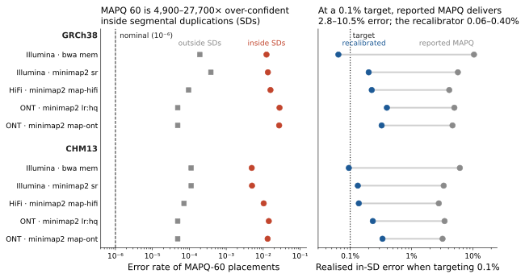
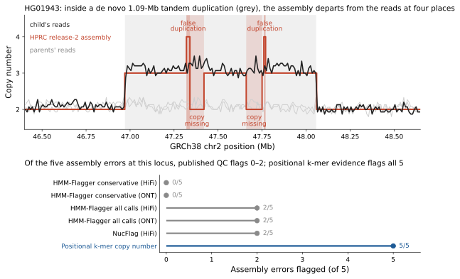
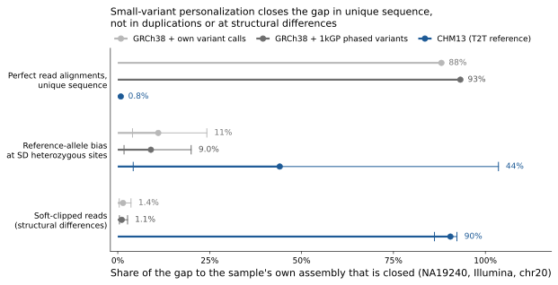
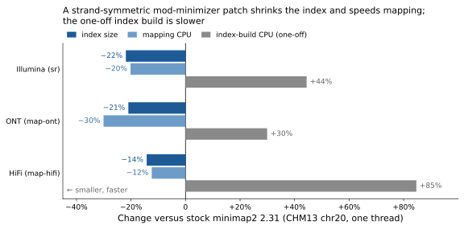
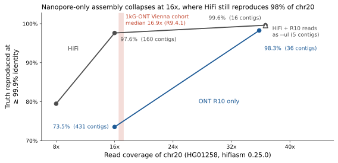

← copyproof: the assembly-audit tool this review led to.
Read alignment & genome assembly · 2026 review + litmus pilots on public 1000 Genomes data
The frontier is calibrated placement: knowing where sequence belongs, and how sure we are.
Speed and contiguity are no longer the binding constraints. The errors that remain sit in segmental duplications (SDs), satellites and structurally variable loci, and they are increasingly silent: aligners report their top mapping quality for wrong placements, and assemblies carry misplaced copies that standard QC does not flag. Each failure below was measured on public 1kG data; the pilots show that the first can be fixed and the second caught.
how much more often MAPQ 60 is wrong inside SDs than its nominal 10⁻⁶ (5 aligner presets × GRCh38/CHM13).
errors in a real 1.09-Mb misassembly flagged by HPRC's default QC tracks (HG01943). All calls flag 2; positional k-mer evidence flags all 5.
of the SD reference-bias excess removed by small-variant personalization, which closes 88–93% of the gap in unique sequence.
Red marks failures of current practice, blue the proposed fix, grey the comparators.
1Mapping quality is miscalibrated exactly where it matters
Inside SDs, MAPQ 60 was wrong for 1.2–2.8% of reads on GRCh38 and 0.5–1.4% on CHM13; outside SDs, for 0.005–0.04%.

litmus/L5_mapq_calibration.In 71–96% of wrong MAPQ-60 placements the read genuinely aligns better to the paralog it was sent to, so better search cannot fix them; only calibrated uncertainty can. A recalibrator using only SAM tags and SD annotation (gradient boosting plus isotonic calibration, trained and tested on different chromosomes) cut in-SD calibration error by 59–93% in all ten runs.
Build: an aligner-agnostic BAM post-processor that writes a calibrated error probability and paralog-group posteriors, then the same features inside minimap2 and strobealign (F2). It passes if the calibration holds on real NYGC and HPRC reads and on held-out samples.
2Assembly QC misses misplaced copies, because they carry normal coverage
HG01943 carries a de novo 1.09-Mb tandem duplication. The HPRC release-2 assembly holds none of its 28 junction 31-mers, joins maternal pieces into the paternal chromosome at four joins that no read spans, and departs from the read copy number at four places.

litmus/cases_HG01943_HG01103.Every misplaced copy is real sequence at haploid depth, so coverage-based QC is blind to it. Positional evidence (k-mer copy number along the reference, haplotype-specific k-mers per assembly piece, audits of scaffold joins) catches all five errors. A second case shows the cell-line failure mode: in HG01103 a sub-clonal chromothripsis (16 junctions, about 64% of cells) is fully present in the trio assembly, but its long contigs follow the minority (normal) clone at 11 of 16 forks.
Build: placement-aware assembly QC (F4), then scan the 462 QC'd HPRC release-2 haplotypes and 130 HGSVC3 haplotypes for this error class; follow with a copy-number-consistent graph walk in the assembler and clone-aware output for cell lines (F5). It passes at 5/5 HG01943 targets with ≤ 2% false flags on T2T HG002.
3The remaining reference headroom is structural
On real NA19240 reads, personalizing GRCh38 with the sample's small variants closes almost all of the unique-sequence gap, little of the gap in duplications and almost none at structural differences. A structurally complete reference (CHM13) closes 90% of the clipping gap.

litmus/L2L3_reference_headroom.Build: population-aware references that add structural haplotypes, as an ALT panel or per-sample structural personalization for linear mappers (F3), rather than more SNVs. It passes if it recovers ≥ 50% of the oracle gap in SD mapping quality and reference bias.
4A drop-in sketching change makes minimap2 smaller and faster
Replacing random minimizers with a strand-symmetric open-closed mod-minimizer (a 241-line patch with its own index format) gives 14–22% smaller indexes and 12–30% less mapping CPU, with equal or lower wrong-mapping rates at MAPQ ≥ 1.

litmus/L1_seed_sampling.Build: upstream the patch after a real-read accuracy check (F6). It passes with a ≥ 15% smaller index, ≤ 0.1-point accuracy loss and equal variant calls on real reads.
5Population-scale nanopore assembly needs coverage the largest 1kG cohort lacks
hifiasm in ONT mode on standard-length R10 reads reproduced 98.3% of HG01258's chr20 at about 36x, close to HiFi, but only 73.5% at 16x, where HiFi still reached 97.6%.

--ul input cut the HiFi assembly from 16 contigs to 5. Data: litmus/L4_assembly.Build: trio-phased, QC'd nanopore assemblies for the high-coverage 1kGP-LRSC R10 samples, and pangenome-constrained haplotypes for the 16.9x Vienna cohort (F7). It passes if, on the 12 LRSC samples in HPRC release 2, ≥ 98% of each truth haplotype is reproduced at ≥ 99.9% identity with QV ≥ 45.
What to build, in order
- Open placement-truth benchmark on 1kG genomesF1Truth from HPRC release-2 and HGSVC3 haplotypes of NA19240, HG00733, HG02818 and NA19036, plus HG002, with leakage-free panels. Informative if NA19240 and HG002 differ ≥ 1.5× in some stratum, or aligner rankings change (τ < 0.8).
- Calibrated MAPQ with paralog posteriorsF2Halve in-SD calibration error on real reads; cut SD Mendelian errors by 20% at matched call counts.
- Placement-aware assembly QCF45/5 HG01943 targets; ≤ 2% false flags on T2T HG002; a prevalence estimate across 592 haplotypes.
- Upstream the minimap2 sketching patchF6≥ 15% smaller index, ≤ 0.1-point accuracy loss, equal variant calls on real reads.
- Structural population-aware referencesF3Recover ≥ 50% of the oracle gap in SD mapping quality and reference bias.
- Assembler repairs and clone-aware assemblyF4, F5Both HG01943 copies and the junction assembled; HG01103 majority clone followed at ≥ 15/16 forks.
- Population-scale nanopore assembliesF7On the 12 1kGP-LRSC samples in HPRC release 2: ≥ 98% of truth at ≥ 99.9% identity, QV ≥ 45.
If only one thing is funded: the benchmark and calibrated MAPQ (F1 + F2). They are cheap, openly demonstrable on 1kG data, already shown to work in simulation, and they improve every downstream analysis of the 3,202 NYGC genomes.
Caveats
- The MAPQ (L5) and sketching (L1) pilots use simulated reads; their real-read acceptance tests are specified, not yet run.
- The reference-headroom pilot (L2/L3) covers one sample and one chromosome; the nanopore pilot (L4) is a partial grid on one sample.
- The case studies use region slices of public data; several 2025–2026 sources are preprints; proposal scores are structured judgments, recorded so readers can re-weight them.